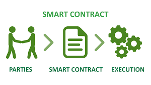
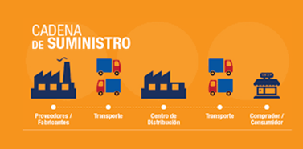
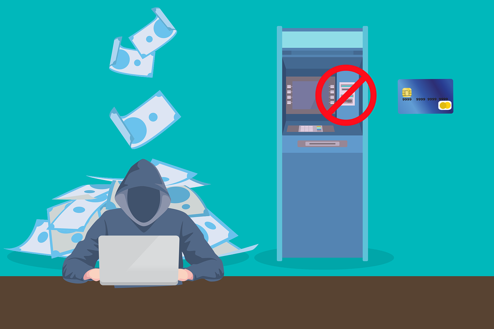
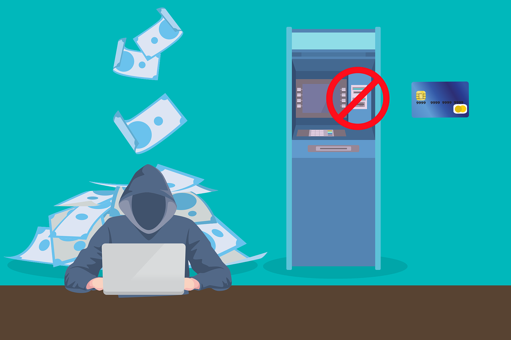

¿QUÉ ES SMART CONTRACT?
Un contrato inteligente es un programa que se almacena dentro de una Blockchain. Los contratos inteligentes amplían la Blockchain de los datos al Código y representan un contrato entre las partes. El contrato se codifica y cuando se produce una acción, el Código se ejecuta y proporciona una respuesta.
Todos los términos y condiciones de los contratos se definen mediante programación. Una definición especifica las reglas, los requisitos y las recompensas de los participantes en la Blockchain. también especifica como se transfieren los recursos digitales entre las partes. y a cada contrato inteligente se le asigna una dirección de 20 bytes que lo identifica de forma única.
Los contratos inteligentes se ejecutan por sí solos, envían eventos que desencadenan transiciones de estado y llaman a funciones, y, además, son ideales para la tecnología de Blockchain porque permiten a la gente que no se conoce, hacer negocios de forma segura y sin intermediarios.
Los contratos inteligentes tienen estas propiedades y ventajas clave:
-Transparencia:
Los usuarios de Blockchain pueden leer los contratos inteligentes y acceder a ellos mediante las API.
-Inmutabilidad:
La ejecución de contratos inteligentes crea registros que no se pueden cambiar.
-Distribución:
Los nodos de la red validan y comprueban la salida del contrato. Los estados del contrato pueden ser visibles públicamente. En algunos casos, incluso las variables "privadas" son visibles.

Casos de uso:
Los contratos inteligentes pueden ser realmente útiles para muchos sectores y procesos.
- Seguros: cuando se producen determinados eventos, los contratos inteligentes desencadenan automáticamente una notificación que simplifica el proceso de notificaciones. Después, para determinar el importe de indemnización que reciben los usuarios, los detalles de la notificación se pueden registrar en la cadena de bloques. Esta funcionalidad puede reducir los tiempos de procesamiento y los errores humanos.
- Votaciones: los contratos inteligentes pueden ayudar a que los votos sean automáticos y transparentes. Cada contrato actúa como una votación, que representa la identidad de un votante. Dado que una cadena de bloques es inmutable, lo que significa que no se puede cambiar, los votos no se pueden alterar.

- Cadenas de suministro: a medida que los elementos se mueven por la cadena de suministro, los contratos inteligentes pueden registrar la propiedad y confirmar quién es responsable de un producto en un momento dado. En cualquier fase, el contrato inteligente se puede usar para averiguar exactamente dónde deben estar los productos. Si alguna parte de la cadena de suministro no se entrega a tiempo, todos los demás partes sabrán dónde se produjo el problema.
- Mantenimiento de registros: muchos sectores pueden usar contratos inteligentes para mejorar la velocidad y la seguridad del mantenimiento de los registros. La tecnología de cadena de bloques se puede usar para digitalizar registros y cifrarlos y almacenarlos de forma segura. Además, el acceso se puede canalizar para que solo los usuarios autorizados puedan acceder a los registros.
- Posesión de propiedades: los contratos inteligentes pueden registrar quién es el propietario de la propiedad. Por tanto, son una manera rápida y rentable de registrar la propiedad. Los contratos inteligentes también pueden ayudar a facilitar la transferencia de la propiedad de forma oportuna y segura.
 
